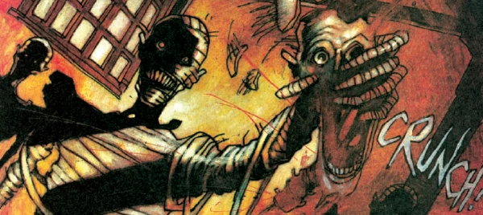

Shoe-horned into the Dreddverse, this is about a couple of antique dealers. They seem to be living in Victorian London (given the Cockney accents, horse and carts, gas street lamps and so on), except the blurb says it's a township in The Cursed Earth. Lovejoy meets Dickens (meets Mad Max 3).
Art by Dean Ormston
| Story Title | Parts | Pages | w indicates a wraparound coverCovers | Year(s) | Issues | Writer | Artist | Colourist | Letterer |
|---|---|---|---|---|---|---|---|---|---|
| Antique & Curious | 2 | 14 | 0 | 1993 | Reprints: M350 (supplement)M2.27-M2.28 | Si Spencer | Dean Ormston | <-- | Fiona Stephenson |
| Hamster Horror Production | 3 | 21 | M2.40: Dean Ormston 1 | 1993 | Reprints: M350 (supplement)M2.40-M2.42 | Si Spencer | Dean Ormston | <-- | Fiona Stephenson |
| Grief Encounter | 3 | 21 | 0 | 1994 | Reprints: M350 (supplement)M2.47-M2.49 | Si Spencer | Dean Ormston | <-- | Fiona Stephenson |
| Secret Origin | 1 | 7 | 0 | 1995 | M2.83 | Si Spencer | Paul Peart | [b&w] | Steve Potter |
Linked to Missionary ManSatanic Farces | 4 | 28 | M3.05: Jason Brashill 1 | 1995 | M3.04-M3.07 | Gordon Rennie Si Spencervarious | Dean Ormston | <-- | Fiona Stephenson |
From The Mean MachineThe Geek | 1 | 10 | 0 | 2001 | M3.74 | Gordon Rennie | Paul Marshall (P) Lee Townsend (I)various | [b&w] | David Bishop |
| year | episodes | pages |
| 1987 | 0 | 0 |
| 1988 | 0 | 0 |
| 1989 | 0 | 0 |
| 1990 | 0 | 0 |
| 1991 | 0 | 0 |
| 1992 | 0 | 0 |
| 1993 | 5 | 35 |
| 1994 | 3 | 21 |
| 1995 | 5 | 35 |
| 1996 | 0 | 0 |
| 1997 | 0 | 0 |
| 1998 | 0 | 0 |
| 1999 | 0 | 0 |
| 2000 | 0 | 0 |
| 2001 | 1 | 10 |
| 2002 | 0 | 0 |
| 2003 | 0 | 0 |
| 2004 | 0 | 0 |
| 2005 | 0 | 0 |
| 2006 | 0 | 0 |
| 2007 | 0 | 0 |